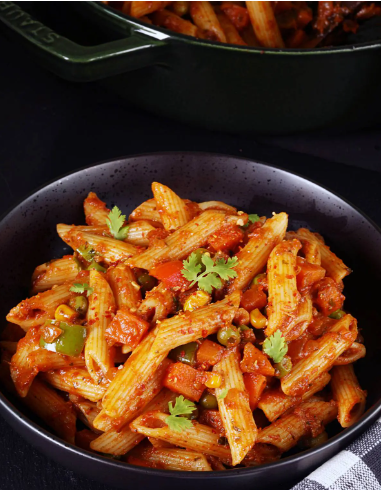

Masala Pasta(Indian Style)

Masala Pasta is an Indian-Italian fusion dish that may have originated on the streets of India, selling it as a street food. Not a traditional dish but it has been a favorite & made in almost every Indian home, especially with kids.
Surprisingly you see a lot of Moms customizing it their own way to suit the kids’ taste buds.
That being said, Masala pasta can be eaten by everyone – kids & grown-ups! This Indian style flavorful & delicious masala pasta will be your new favorite! Because you can make it however you like – spicy, less-spicy but flavorsome, creamy, or meaty.
Ingredients
- Pasta
- Onions
- Garlic
- Ginger
- Cumin seeds
- Tomato
- Tomato ketchup or puree
- Red chilli powder
- Garam masala
- coriander powder
- Turmeric
- Kasuri methi
- coriander leaves
- Optional: Carrots, bell peppers, peas, corn, mushrooms, broccoli or any other veggies you like
Steps
-
Cook the pasta al dente in salted water, then drain and reserve some pasta water
-
Heat oil and butter in a pan, then fry cumin seeds, garlic and ginger
-
Add onions and fry until golden
-
Add veggies and fry for a few minutes
-
Add salt and spices and cook until the tomatoes are soft and the masala is aromatic.
-
Add some water or pasta water to make a saucy consistency
-
Add cooked pasta and toss well
-
Sprinkle kasuri methi and coriander leaves.
-
Serve hot.
>
Enjoy your meal 💕